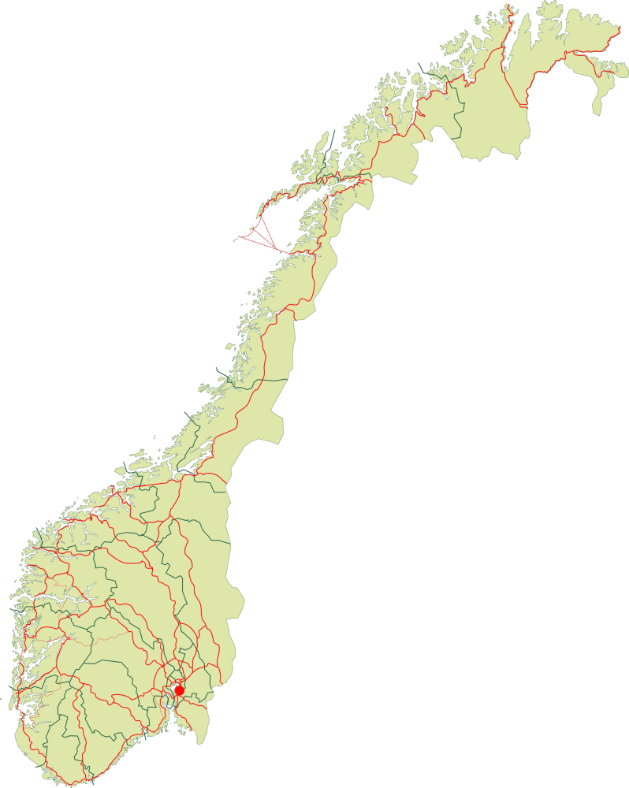

Generelt om geografisk sporing
Geografisk lokalisering brukes av smarttelefoner og annet datautstyr som er koblet opp mot internett. Enheten din legger fra seg informasjon om hvor du er og hva du gjør hver gang enheten kobles opp mot et WiFi eller å benytte GPS. Dette kan skje uten at du er klar over det. Et krav som stilles er at virksomheten må spørre om samtykke fra brukerne når de tilbyr tjenester som krever informasjon om hvor man befinner seg.
Smarttelefoner og annet bærbart utstyr som lesebrett, er knyttet til deg som bruker utstyret. Bevegelser du gjør registreres av disse enhetene og gir derfor et bilde av ditt bevegelsesmønster. Informasjon om lokalisering gis ikke bare når du bruker GPS. Bruker du WiFi kan utstyret fortsatt bestemme hvor du befinner deg, og gi andre aktører informasjon om dette. Personer med smarttelefon er som regel ikke klar over dette. Leverandører av tjenester som bruker geolokalisering får derfor data om deg og ditt liv som de bruker for å lage en profil av deg som bruker. De ser altså da ditt bevegelsesmønster og bruker dette for å forbedre sine tjenester etter brukerne sine bevegelser.
Les mer om sporing i ulike sosiale medier her.